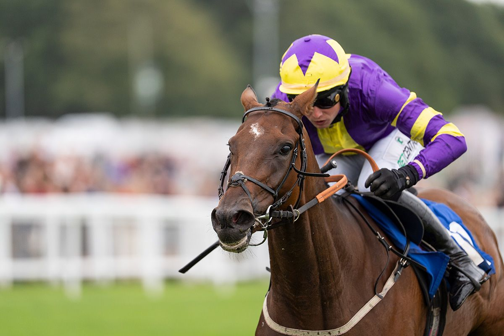

Freddie Mitchell recurre los 12 días de suspensión por errar el recorrido en Warwick
Un Panel Disciplinario independiente examinará el lunes 23 de noviembre la apelación del jockey contra la sanción impuesta por los comisarios tras su monta sobre Mariole.

Freddie Mitchell ha recurrido la sanción que le impusieron los comisarios del hipódromo de Warwick el pasado 11 de noviembre. Le declararon culpable de tomar un recorrido equivocado y le suspendieron durante 12 días.
Los hechos se produjeron en el The Dudley Peverill Conditional Jockeys' Handicap Hurdle Race, una carrera de vallas de Clase 4 reservada a jockeys condicionales. Mitchell montaba a Mariole (FR).
La apelación se verá el lunes 23 de noviembre a las 9:30 horas ante un Panel Disciplinario independiente. El tribunal estará presidido por el juez James O'Mahony y completado por Paul Brewster y Colin Vickers.
La Autoridad Británica de Carreras de Caballos (BHA) ha indicado que el Panel Judicial celebra sus vistas por videoconferencia. Este órgano es independiente e integra el Panel Disciplinario, el Comité de Apelación y el Comité de Licencias. Recibe apoyo administrativo de la BHA a través del Judicial Panel Executive.
Por Martín Larrañeta